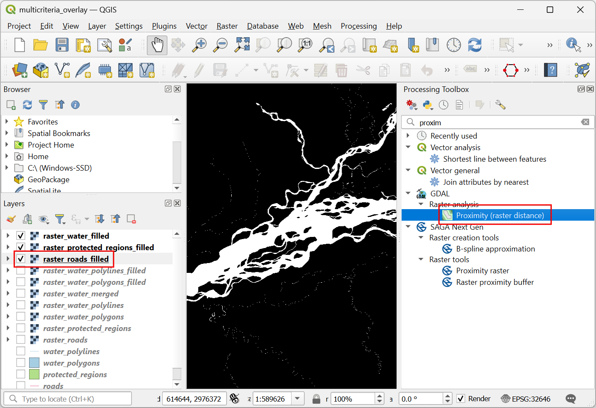

Ujaval Gandhi
Ujaval GandhiAnaliza višekriterijumskog preklapanja (QGIS3)¶
Višekriterijumska ponderisana analiza preklapanja je proces dodeljivanja područja na osnovu različitih atributa koje odabrana područja treba da poseduju. Iako je ovo uobičajena GIS operacija, najbolje se izvodi u rasterskom prostoru korišćenjem pristupa zasnovanog na mreži.
Белешка
Vektorski naspram rasterskih preklapanja
Možete izvršiti analizu preklapanja na vektorskim slojevima koristeći alate za geoprocesiranje kao što su bafer, rastvor, razlika i presek. Ova metoda je idealna ako želite da pronađete binarni pogodan/nepogodan odgovor i radite sa nekoliko slojeva. Možete pogledati naš video tutorijal o „Lokiranju nove parking stanice za bicikle korišćenjem višekriterijumske analize preklapanja <https://www.youtube.com/watch?v=nTz2khWi2-s&list=PLppGmFLhQ1HIqNiNWxVqs5wBLiA_UrKTQ&index=26>”_ za vodič korak po korak o ovom pristupu.
Rad u rasterskom prostoru vam daje rangiranje pogodnosti - ne samo najpogodnije lokacije. Takođe vam omogućava da lako kombinujete bilo koji broj ulaznih slojeva i dodelite različite težine svakom kriterijumu. Generalno, ovo je preferirani pristup za pogodnost lokacije.
Ovaj tutorijal prolazi kroz tipičan tok rada za izvođenje analize pogodnosti lokacije - konvertovanje izvornih vektorskih podataka u odgovarajuće rasterske slike, njihovu reklasifikaciju i izvođenje matematičkih operacija.
Pregled zadatka¶
U ovom tutorijalu ćemo identifikovati odgovarajuća područja za razvoj, koja su
Blizu puteva, i
Daleko od vodenih površina i
Ne u zaštićenom području.
Dobijte podatke¶
Koristićemo vektorske slojeve podataka iz OpenStreetMap (OSM). OSM je globalna baza podataka slobodno dostupnih osnovnih mapa. Geofabrik pruža dnevno ažurirane shapefile-ove skupova podataka OpenStreetMap-a.
Koristićemo OSM slojeve podataka za državu Asam u Indiji. Geofabrik India shapefiles su preuzeti, ponovo projektovani u UTM projekciju, isečeni na državnu granicu i upakovani u jednu GeoPackage datoteku. Kopiju geopackage-a možete preuzeti sa linka ispod:
Izvor podataka: [GEOFABRIK]
Procedura¶
Pregledajte preuzetu datoteku
assam.gpkgu QGIS pregledaču. Proširite je i prevucite svaki od 5 pojedinačnih slojeva podataka na platno mape. Videćete slojeveboundary,roads,protected_regions,water_polygonsiwater_polylinesučitane u panelu Layers.

Prvi korak u analizi preklapanja je konvertovanje svakog sloja podataka u raster. Važno je razmotriti da svi rasteri moraju biti istog obima. Koristićemo „granični“ sloj kao obim za sve rastere. Idite na . Potražite i pronađite algoritam . Dvaput kliknite da biste ga pokrenuli.

U dijalogu Konverzija vektora - Rasterizacija (vektor u raster), izaberite
putevikao Ulazni sloj. Želimo da kreiramo izlazni raster gde su vrednosti piksela 1 tamo gde postoji put i 0 tamo gde nema puteva. Unesite1kao Fiksna vrednost za snimanje. Ulazni slojevi su u projektovanom CRS-u sa metrima kao jedinicom. IzaberiteGeoferentne jedinicekao Jedinice veličine izlaznog rastera. Postavićemo rezoluciju izlaznog rastera na 15 metara. Izaberite15kao Širina/Horizontalna rezolucija i Visina/Vertikalna rezolucija. Zatim, kliknite na strelicu pored Izlazni obim i izaberite .

Pomerite se nadole da biste pronašli Napredni parametri i izaberite profil
Visoka kompresijada biste primenili kompresiju. Ovo će generisati kompresovanu rastersku datoteku manje veličine nakon pokretanja alata. Primena kompresije bez gubitaka se toplo preporučuje pri radu sa rasterskim podacima.

Postavite izlazni raster Rasterized kao
raster_roads.tifi kliknite na Run.

Kada se obrada završi, videćete novi sloj raster_roads učitan u panelu Layers. Raster ima vrednosti piksela 1 za piksele koji su se ukrštali sa putevima. Svi ostali pikseli su podešeni kao vrednosti NoData. Ove vrednosti nodata su problematične jer kada rasterski kalkulator (koji ćemo kasnije koristiti) naiđe na piksel sa vrednošću nodata u bilo kom sloju, on takođe postavlja izlaznu vrednost tog piksela na nodata, što rezultira neočekivanim izlazom. Popunićemo ove vrednosti nodata vrednošću 0. Potražite i pronađite algoritam . Dvaput kliknite da biste ga pokrenuli.

Izaberite
raster_roadskao Rasterski unos i izaberite0kao Vrednost popunjavanja. Pomerite se nadole da biste pronašli Napredni parametri i izaberite profilVisoka kompresijada biste primenili kompresiju. Podesite Izlazni raster kaoraster_roads_filled.tifi kliknite na Pokreni.

Kada se obrada završi, videćete novi sloj
raster_roads_filledučitan u panelu Layers. Ovaj raster ima vrednosti 1 za puteve i 0 za puteve bez puteva. Ako sloj nije pravilno vizuelizovan, možete kliknuti na Otvori panel za stilizovanje slojeva i podesiti Min na0i Max na1.

Ponovite korake 3-8 za ostala 3 vektorska sloja
protected_regions,water_polylinesiwater_polygons. Potrebno je da rasterizujete i popunite ćelije bez podataka za ove slojeve. Ako želite da ručno pokrenete ove korake, možete konfigurisati dijalog algoritma za obradu, pokrenuti algoritam i kada se algoritam završi, preći na karticu Parameters i samo promeniti imena ulaznih i izlaznih slojeva. Takođe možete pokrenuti svaki algoritam na sva 4 sloja u jednom koraku koristeći grupnu obradu. Pogledajte tutorijal Paketna obrada pomoću okvira za obradu (QGIS3) da biste saznali više. Kada završite, trebalo bi da imate 4 rasterska sloja i da generišete odgovarajuće rasterske slojeveraster_roads_filled,raster_protected_regions_filled,raster_water_polylines_fillediraster_water_polygons_filled. Primetićete da imamo 2 sloja vezana za vodu - oba predstavljaju vodu. Možemo ih spojiti da bismo imali jedan sloj koji predstavlja vodene površine u regionu. Potražite i pronađite algoritam u alatkama za obradu. Dvaput kliknite da biste ga pokrenuli.

Izaberite slojeve
raster_water_polygonsiraster_water_polylineskoristeći dugme … kao ulazne slojeve. Unesite sledeći izraz koristeći dugme e. Zadržite sve ostale opcije kao podrazumevane i sačuvajte izlazni sloj pod imenomraster_water_merged.tifi kliknite na Pokreni.
"raster_water_polygons_filled@1" + "raster_water_polylines_filled@1"
Dobijeni spojeni raster će imati piksele sa vrednošću 1 za sva područja sa vodom. Ali primetićete da postoje neka područja gde je postojao i vodeni poligon i vodena polilinija. Ta područja će imati piksele sa vrednošću 2 - što nije tačno. Možemo to popraviti jednostavnim izrazom. Ponovo otvorite algoritam .

Izaberite sloj
raster_water_mergedkoristeći dugme … kao ulazni sloj. Unesite sledeći izraz koristeći dugme e. Zadržite sve ostale opcije kao podrazumevane i sačuvajte izlazni sloj pod imenomraster_water_filled.tifi kliknite na Pokreni.
"raster_water_merged@1" > 0
Dobijeni sloj „raster_water_filled“ sada ima piksele sa samo vrednostima 0 i 1.

Sada kada imamo slojeve koji predstavljaju piksele puta i vode, možemo generisati rastere blizine. Oni su takođe poznati kao Euklidske udaljenosti - gde svaki piksel u izlaznom rasteru predstavlja udaljenost do najbližeg piksela u ulaznom rasteru. Ovaj rezultujući raster se zatim može koristiti za određivanje odgovarajućih područja koja se nalaze na određenoj udaljenosti od ulaza. Potražite i locirajte algoritam . Dvaput kliknite da biste ga pokrenuli.

U dijalogu Raster Analysis - Proximity (Raster Distance), izaberite
raster_roads_filledkao Input layer. IzaberiteGeoreferenced coordinateskao Distance units. Pošto su ulazni slojevi u projektovanom CRS-u sa metrima kao jedinicama, unesite5000(5 kilometara) kao Maximum distance to be generated. Za sve piksele koji su veći od maksimalne udaljenosti - postavićemo njihove vrednosti na 5000. Zato postavite Nodata vrednost za vrednost rastera blizine odredišta na5000.

Možete proširiti Napredni parametri i izabrati profil
Visoka kompresijada biste primenili kompresiju. Nazovite izlaznu datoteku kaoroads_proximity.tifi kliknite na Pokreni.

Белешка
Može potrajati i do 15 minuta da se ovaj proces pokrene. To je računski intenzivan algoritam koji treba da izračuna rastojanje za svaki piksel ulaznog rastera.
Kada se obrada završi, novi sloj
roads_proximityće biti dodat na panel Layers. Da bismo ga bolje vizuelizovali, promenimo podrazumevani stil. Kliknite na dugme Otvori panel za stilizovanje slojeva u panelu Layers. Promenite vrednost Max na5000pod Color gradient.

Ponovite algoritam Proximity (Raster Distance) za sloj
raster_water_filledsa istim parametrima i nazovite izlazwater_proximity.tif. Ako kliknete oko rezultujućeg rastera, videćete da je to kontinuum vrednosti od 0 do 5000. Da bismo koristili ovaj raster u analizi preklapanja, prvo ga moramo reklasifikovati da bismo kreirali diskretne vrednosti. Ponovo otvorite algoritam .

Želimo da damo viši rezultat pikselima koji su blizu puteva. Zato ćemo koristiti sledeću šemu.
0-1000m –> 100
1000-2000m –> 50
>2000m –> 10
Izaberite sloj
roads_proximitykoristeći dugme … kao ulazni sloj. Unesite sledeći izraz koji primenjuje gore navedene kriterijume na ulaz. Zadržite sve ostale opcije kao podrazumevane i sačuvajte izlazni sloj pod imenomroads_reclass.tifi kliknite na Pokreni.100*("roads_proximity@1"<=1000) + 50*("roads_proximity@1">1000)*("roads_proximity@1"<=2000) + 10*("roads_proximity@1">2000)
Kada se proces reklasifikacije završi, novi sloj
roads_reclassće biti dodat na panel Layers. Ovaj sloj ima samo 3 različite vrednosti, 10, 50 i 100, što ukazuje na relativnu podobnost piksela u odnosu na udaljenost od puteva. Ponovo otvorite algoritam .
Ponovite proces reklasifikacije za sloj „water_proximity“. Ovde će šema biti obrnuta, gde će pikseli koji su dalje od vode imati viši rezultat.
0-1000m –> 10
1000 -2000m —> 50
>2000m –> 100
Izaberite sloj
water_proximitykoristeći dugme … kao ulazni sloj. Unesite sledeći izraz koji primenjuje gore navedene kriterijume na ulaz. Zadržite sve ostale opcije kao podrazumevane i sačuvajte izlazni sloj pod imenomwater_reclass.tifi kliknite na Pokreni.100*("water_proximity@1">2000) + 50*("water_proximity@1">1000)*("water_proximity@1"<=2000) + 10*("water_proximity@1"<1000)
Sada smo spremni da uradimo konačnu analizu preklapanja. Podsetimo se da su naši kriterijumi za određivanje podobnosti sledeći - blizu puteva, dalje od vode i ne u zaštićenom području. Otvorite . Izaberite slojeve
roads_reclass,water_reclass,raster_protected_regions_filledkoristeći dugme … kao ulazne slojeve. Koristite dugme e da biste uneli sledeći izraz koji primenjuje ove kriterijume. Ostale parametre zadržite kao podrazumevane. Nazovite izlazoverlay.tifi kliknite Pokreni.
(("roads_reclass@1" + "water_reclass@1")/2) *("raster_protected_regions_filled@1" != 1 )
Белешка
U ovom primeru, dajemo jednaku težinu i blizini puta i vode. U stvarnom scenariju, možete imati više kriterijuma sa različitim značajem. To možete simulirati množenjem rastera sa odgovarajućim težinama u gornjem izrazu. Na primer, ako je blizina puteva dvostruko važnija od blizine vode, umesto „((„roads_reclass@1” + „water_reclass@1”)/2)“, možete koristiti izraz „((2*”roads_reclass@1” + „water_reclass@1”)/3)`.
Kada se obrada završi, rezultujući raster „preklapanje“ će biti dodat u panel Slojevi. Vrednosti piksela u ovom rasteru kreću se od 0 do 100 - gde je 0 najmanje pogodno, a 100 najpogodnije područje za razvoj. Hajde da isečemo rezultate na granični sloj. Otvorite .

U dijalogu Ekstrakt rastera - Iseci raster pomoću maskiranog sloja, izaberite
preklapanjekao Ulazni sloj igranicakao Maskirani sloj.

Pomerite se nadole da biste pronašli Napredni parametri i izaberite profil
Visoka kompresijada biste primenili kompresiju. Sačuvajte Isečeno (maska) sloj kaooverlay_clipped.tifi kliknite na Pokreni.

Kada se obrada završi, konačni izlazni sloj
overlay_clippedbiće dodat na panel Slojevi. Kliknite na dugme Otvori panel za stilizovanje slojeva u panelu Slojevi i izaberite rendererSingleband pseudocolor.

Podesite Interpolacija na
Diskretnai izaberiteSpektralnuskalu boja.

Kliknite na podrazumevane vrednosti oznaka pored svake boje i unesite odgovarajuće oznake.

Oznake će se takođe pojaviti kao legenda ispod sloja „overlay_clipped“. Ovo je naša konačna mapa koja prikazuje pogodnost lokacije prema izabranim kriterijumima.

If you want to give feedback or share your experience with this tutorial, please comment below. (requires GitHub account)